Large telescopes also improve the resolution. We can see more clearly even if the apparent size of an object is the same. This is similar, but not equal to, seeing an object in or out of focus.
There are three kinds of telescopes: the refracting telescopes (refractors), the reflecting telescopes (reflectors) and the catadioptric telescopes. In refractor, a lens is used to bend light to a point, called the focus, for viewing. In reflector, a mirror is used instead. Catadioptric telescopes use both a lens, called correcting plate, and a mirror. The following figure shows the three basic optical designs of telescopes.
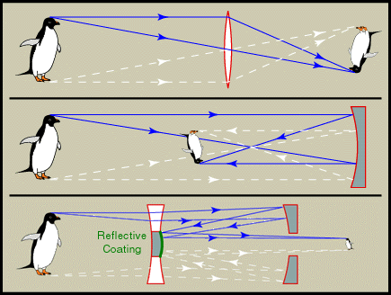
Usually, apart from the main lens or mirror, there are more mirrors to bring the focus to some convenient position, as shown in the diagrams below.
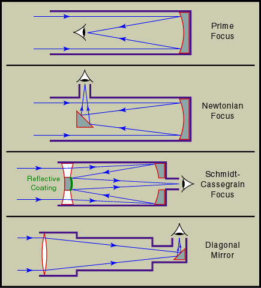
Common misconceptions:
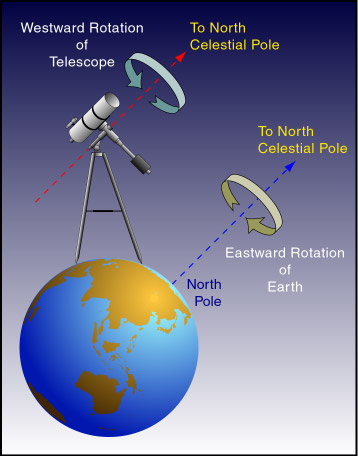
So far, we have discussed telescopes for visible light. There are telescopes for radio waves, infrared, X-rays and gamma rays. They can be ground based or orbiting around the Earth. One advantage of the space telescopes is that they will not be affected by the atmosphere, e.g., weather or turbulence. The following is a photo of the largest (in term of collecting area) radio wave telescope, FAST (Five-hundred-meter Aperture Spherical Telescope), suspended over a valley in Guizhou Province, southwest China with a diameter of 500 m.
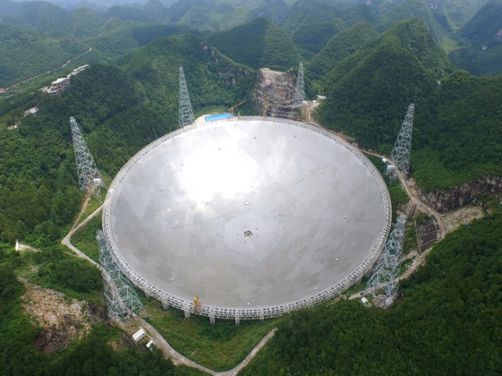 |
| Courtesy NAOC. |
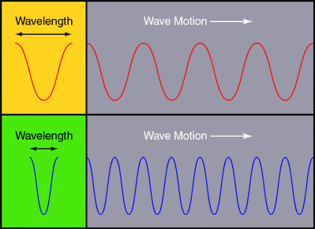
The wavelengths of visible light range from 400 nm to 700 nm. Infrared and radio waves have longer wavelengths but lower frequencies; ultraviolet and gamma ray have shorter wavelengths and higher frequencies. The graph below shows the opacity of our atmosphere to EM waves in different frequencies. We can see that the Earth's atmosphere is opaque to, say, gamma rays and transparent to the visible light. So, we have to put gamma ray telescopes in space.
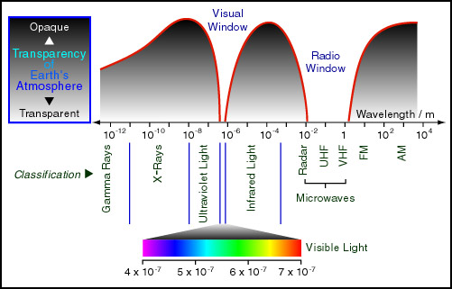
How can we create light? Just saying "Let there be light" will not work very well. However, when we heat something up, it will radiate EM waves.
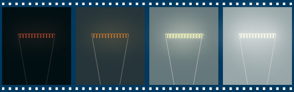
To precisely describe the radiation, we specify the spectrum, which is a graph plotting the relative intensity at each wavelength of radiation. Usually, the spectrum does not tell us the luminosity, the total energy the object radiates out.
For a warm (or hot) and dense (non-gaseous substance in high pressure) object (such as a star or a piece of metal), it will radiate light (electromagnetic wave) in many frequencies, and its spectrum follows what we call a black body radiation or black body spectrum.
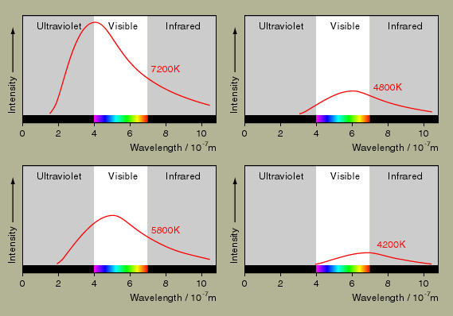
The spectrum depends only on the surface temperature of the object. If the temperature is low, the peak of the spectrum is at red region. For higher temperature, the peak shifts towards the yellow, blue, finally in the ultraviolet region. Different stars have different colors. In general, if the peak of a spectrum is at the red light region, the star will appear to be red. If the spectrum is flat, the star is white in color.
Hotter objects also radiate more energy per unit area than cooler objects. Therefore, the color of a star is mainly determined by its surface temperature, but its luminosity is determined both by its surface temperature and the surface area.
The spectrum in the above figure is continuous in frequency, but it is not always the case. The real spectrum from a star could have absorption or emission lines.
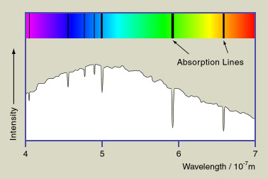
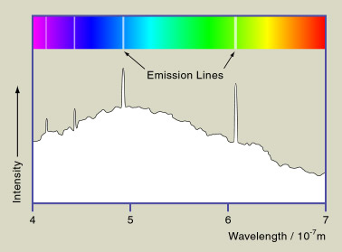
Gas in low pressure and low density (e.g. the outer atmosphere of a star) will alter the light that passes through it. It is because the gas will absorb light at some particular wavelengths and re-radiate it in random directions. Thus, after passing through the low pressure gas, the spectrum of the original white light will have dark lines, called absorption lines. In the other direction, we will see the emission lines of the gas. Since different gas has different set of lines, we can tell which kind of gas it is by analyzing the line spectrum.
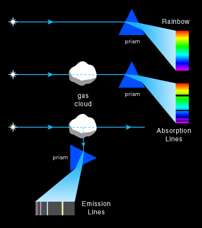
In astronomy, we will call the EM wave blue-shifted or red-shifted, because blue and red are respectively near the frequency of high and low ends of the visible spectrum. If the speed of the source is not large comparing with c, the ratio of the change in wavelength is given by:
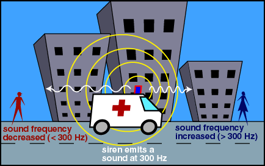
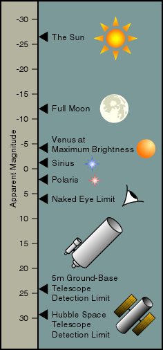